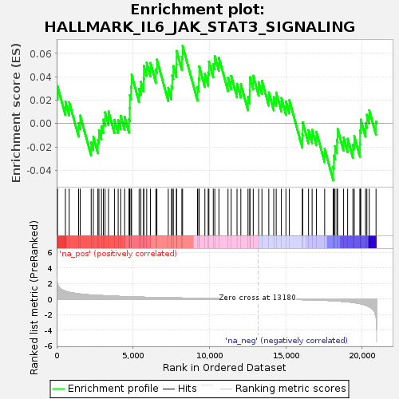

| | | Dataset | GSE18198_base_collapsed |
| Phenotype | NoPhenotypeAvailable |
| Upregulated in class | na_pos |
| GeneSet | HALLMARK_IL6_JAK_STAT3_SIGNALING |
| Enrichment Score (ES) | 0.066452436 |
| Normalized Enrichment Score (NES) | 0.71624064 |
| Nominal p-value | 0.8278689 |
| FDR q-value | 0.86912376 |
| FWER p-Value | 1.0 |
Table: GSEA Results Summary

Fig 1: Enrichment plot: HALLMARK_IL6_JAK_STAT3_SIGNALING
Profile of the Running ES Score & Positions of GeneSet Members on the Rank Ordered List
| SYMBOL | TITLE | RANK IN GENE LIST | RANK METRIC SCORE | RUNNING ES | CORE ENRICHMENT | | 1 | JUN | NA | 0 | 5.975 | 0.0115 | Yes |
| 2 | LTB | NA | 2 | 2.837 | 0.0229 | Yes |
| 3 | DNTT | NA | 54 | 1.983 | 0.0320 | Yes |
| 4 | SOCS3 | NA | 572 | 1.002 | 0.0187 | Yes |
| 5 | FAS | NA | 821 | 0.865 | 0.0183 | Yes |
| 6 | CSF2RA | NA | 1438 | 0.664 | 0.0003 | Yes |
| 7 | CCR1 | NA | 1541 | 0.645 | 0.0069 | Yes |
| 8 | OSMR | NA | 2260 | 0.524 | -0.0160 | Yes |
| 9 | CSF3R | NA | 2401 | 0.504 | -0.0113 | Yes |
| 10 | CD44 | NA | 2698 | 0.466 | -0.0140 | Yes |
| 11 | STAM2 | NA | 2767 | 0.460 | -0.0057 | Yes |
| 12 | PTPN2 | NA | 2932 | 0.443 | -0.0021 | Yes |
| 13 | CD36 | NA | 3057 | 0.432 | 0.0035 | Yes |
| 14 | IL13RA1 | NA | 3169 | 0.419 | 0.0096 | Yes |
| 15 | IFNGR1 | NA | 3395 | 0.396 | 0.0103 | Yes |
| 16 | STAT2 | NA | 3782 | 0.363 | 0.0033 | Yes |
| 17 | IL17RB | NA | 4026 | 0.340 | 0.0032 | Yes |
| 18 | STAT1 | NA | 4193 | 0.328 | 0.0067 | Yes |
| 19 | MAP3K8 | NA | 4451 | 0.308 | 0.0059 | Yes |
| 20 | SOCS1 | NA | 4738 | 0.288 | 0.0037 | Yes |
| 21 | GRB2 | NA | 4781 | 0.286 | 0.0132 | Yes |
| 22 | PLA2G2A | NA | 4788 | 0.286 | 0.0244 | Yes |
| 23 | CXCL9 | NA | 4871 | 0.279 | 0.0319 | Yes |
| 24 | LEPR | NA | 4906 | 0.276 | 0.0418 | Yes |
| 25 | IL6ST | NA | 5398 | 0.249 | 0.0297 | Yes |
| 26 | IL1B | NA | 5513 | 0.242 | 0.0358 | Yes |
| 27 | IL12RB1 | NA | 5691 | 0.232 | 0.0388 | Yes |
| 28 | LTBR | NA | 5708 | 0.232 | 0.0495 | Yes |
| 29 | PTPN11 | NA | 5895 | 0.222 | 0.0521 | Yes |
| 30 | STAT3 | NA | 6140 | 0.209 | 0.0519 | Yes |
| 31 | TNFRSF1B | NA | 6495 | 0.192 | 0.0464 | Yes |
| 32 | A2M | NA | 6562 | 0.189 | 0.0547 | Yes |
| 33 | IL10RB | NA | 7307 | 0.160 | 0.0306 | Yes |
| 34 | IL2RA | NA | 7518 | 0.152 | 0.0320 | Yes |
| 35 | CSF1 | NA | 7567 | 0.151 | 0.0412 | Yes |
| 36 | CXCL3 | NA | 7639 | 0.148 | 0.0493 | Yes |
| 37 | CXCL10 | NA | 7844 | 0.140 | 0.0510 | Yes |
| 38 | IL6 | NA | 7852 | 0.140 | 0.0622 | Yes |
| 39 | PDGFC | NA | 8196 | 0.127 | 0.0572 | Yes |
| 40 | CD9 | NA | 8244 | 0.125 | 0.0665 | Yes |
| 41 | CBL | NA | 9220 | 0.096 | 0.0312 | No |
| 42 | PTPN1 | NA | 9307 | 0.093 | 0.0386 | No |
| 43 | CSF2RB | NA | 9333 | 0.092 | 0.0489 | No |
| 44 | REG1A | NA | 9704 | 0.081 | 0.0426 | No |
| 45 | CCL7 | NA | 9921 | 0.075 | 0.0438 | No |
| 46 | IL7 | NA | 9968 | 0.074 | 0.0531 | No |
| 47 | PIK3R5 | NA | 10254 | 0.066 | 0.0509 | No |
| 48 | CXCL11 | NA | 10353 | 0.063 | 0.0577 | No |
| 49 | CRLF2 | NA | 10622 | 0.056 | 0.0563 | No |
| 50 | INHBE | NA | 11219 | 0.041 | 0.0393 | No |
| 51 | HMOX1 | NA | 11426 | 0.035 | 0.0409 | No |
| 52 | ITGB3 | NA | 11808 | 0.028 | 0.0341 | No |
| 53 | CNTFR | NA | 12058 | 0.022 | 0.0337 | No |
| 54 | HAX1 | NA | 12527 | 0.013 | 0.0227 | No |
| 55 | IRF9 | NA | 12644 | 0.011 | 0.0287 | No |
| 56 | IL1R2 | NA | 12653 | 0.011 | 0.0398 | No |
| 57 | CSF2 | NA | 12870 | 0.006 | 0.0409 | No |
| 58 | CXCL13 | NA | 13225 | -0.001 | 0.0354 | No |
| 59 | IL1R1 | NA | 13439 | -0.004 | 0.0367 | No |
| 60 | ACVRL1 | NA | 13889 | -0.015 | 0.0267 | No |
| 61 | PF4 | NA | 14213 | -0.022 | 0.0227 | No |
| 62 | TNFRSF12A | NA | 14373 | -0.024 | 0.0266 | No |
| 63 | TNF | NA | 14712 | -0.032 | 0.0219 | No |
| 64 | IFNGR2 | NA | 15011 | -0.041 | 0.0191 | No |
| 65 | IL3RA | NA | 15232 | -0.049 | 0.0200 | No |
| 66 | EBI3 | NA | 16083 | -0.084 | -0.0092 | No |
| 67 | ACVR1B | NA | 16108 | -0.086 | 0.0011 | No |
| 68 | CD38 | NA | 16491 | -0.104 | -0.0057 | No |
| 69 | CD14 | NA | 16724 | -0.116 | -0.0053 | No |
| 70 | IFNAR1 | NA | 17002 | -0.132 | -0.0071 | No |
| 71 | IL17RA | NA | 17546 | -0.174 | -0.0216 | No |
| 72 | IL9R | NA | 18104 | -0.226 | -0.0368 | No |
| 73 | CXCL1 | NA | 18146 | -0.230 | -0.0273 | No |
| 74 | PIM1 | NA | 18221 | -0.239 | -0.0194 | No |
| 75 | TNFRSF21 | NA | 18348 | -0.254 | -0.0139 | No |
| 76 | TGFB1 | NA | 18394 | -0.258 | -0.0046 | No |
| 77 | BAK1 | NA | 18786 | -0.315 | -0.0118 | No |
| 78 | TNFRSF1A | NA | 19050 | -0.367 | -0.0129 | No |
| 79 | TLR2 | NA | 19396 | -0.445 | -0.0180 | No |
| 80 | TYK2 | NA | 19484 | -0.470 | -0.0107 | No |
| 81 | IL18R1 | NA | 19858 | -0.597 | -0.0171 | No |
| 82 | IL15RA | NA | 19864 | -0.598 | -0.0058 | No |
| 83 | IL4R | NA | 19912 | -0.620 | 0.0034 | No |
| 84 | IRF1 | NA | 20220 | -0.790 | 0.0002 | No |
| 85 | IL2RG | NA | 20308 | -0.862 | 0.0075 | No |
| 86 | MYD88 | NA | 20467 | -1.013 | 0.0115 | No |
| 87 | ITGA4 | NA | 20908 | -2.274 | 0.0019 | No |
Table: GSEA details [plain text format]
 Fig 2: HALLMARK_IL6_JAK_STAT3_SIGNALING: Random ES distribution
Fig 2: HALLMARK_IL6_JAK_STAT3_SIGNALING: Random ES distribution
Gene set null distribution of ES for HALLMARK_IL6_JAK_STAT3_SIGNALING